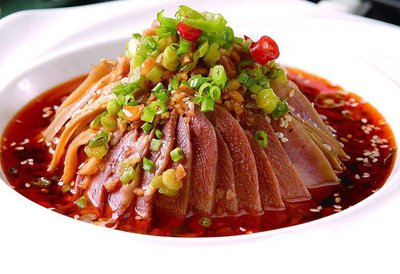

菜品介绍
夫妻肺片是一道四川成都名菜，由郭朝华、张田政夫妻创制而成。通常以牛头皮、牛心、牛舌、牛肚、牛肉为主料，进行卤制，而后切片。再配以辣椒油、花椒面等辅料制成红油浇在上面。
夫妻肺片制作精细，色泽美观，质嫩味鲜，麻辣浓香，非常适口。2017年5月，美国《GQ》杂志发布了餐饮品赏大师Brett Martin最新出炉的"美国2017餐饮排行榜"，夫妻肺片被评为"年度开胃菜"。
历史背景
夫妻肺片由来已久，在清朝末年，成都街头巷尾便有许多挑担、提篮叫卖凉拌肺片的小贩。用成本低廉的牛杂碎边角料，经精加工、卤煮后，切成片，佐以酱油、红油、辣椒、花椒面、芝麻面等拌食，风味别致，价廉物美，特别受到拉黄包车、脚夫和穷苦学生们的喜食。
20世纪30年代，成都人郭朝华和妻子一道以制售凉拌肺片为业，他们夫妻俩亲自操作，走街串巷，提篮叫卖。由于选用牛肉铺的边角料做食材，价格便宜、味道好，颇受欢迎。人们就将这种凉拌牛杂称为"夫妻废片"。因为"废片"二字不好听，再加上食材中有牛肺片，便取"废"的谐音"肺"，改名为"夫妻肺片"。后来，他们发现牛肺的口感不好，便取消了牛肺，但名称却保留了下来。
制作步骤
1准备原料
将牛肉、牛杂（牛心、牛舌、牛肚、牛头皮）洗净，切成大块，放入沸水锅内煮净血水，捞出备用。
2卤制
将牛肉、牛杂放入老卤水中，加入花椒、肉桂、八角等香料包，煮沸后改用小火卤制至熟而不烂，捞出放凉。
3切片
将卤好的牛肉、牛杂切成大小均匀、厚薄一致的片，整齐地码入盘中。
4制作红油
将菜油烧热，倒入装有辣椒面、花椒面的碗中，稍凉后加入酱油、盐、白糖、芝麻酱等调成味汁。
5调味装盘
将调好的味汁淋在牛肉、牛杂片上，再撒上熟芝麻和花生碎，最后点缀上香菜即可。

食材清单
主料
- 牛肉 200克
- 牛肚 150克
- 牛心 100克
- 牛舌 100克
- 牛头皮 100克
辅料
- 香菜 适量
- 熟芝麻 2汤匙
- 花生碎 2汤匙
调味料
- 辣椒油 3汤匙
- 花椒面 1汤匙
- 酱油 2汤匙
- 盐 1茶匙
- 白糖 1茶匙
- 芝麻酱 1汤匙
- 八角/肉桂等香料 适量
营养信息
* 营养信息为每份估算值，实际数值可能因食材和烹饪方式有所不同